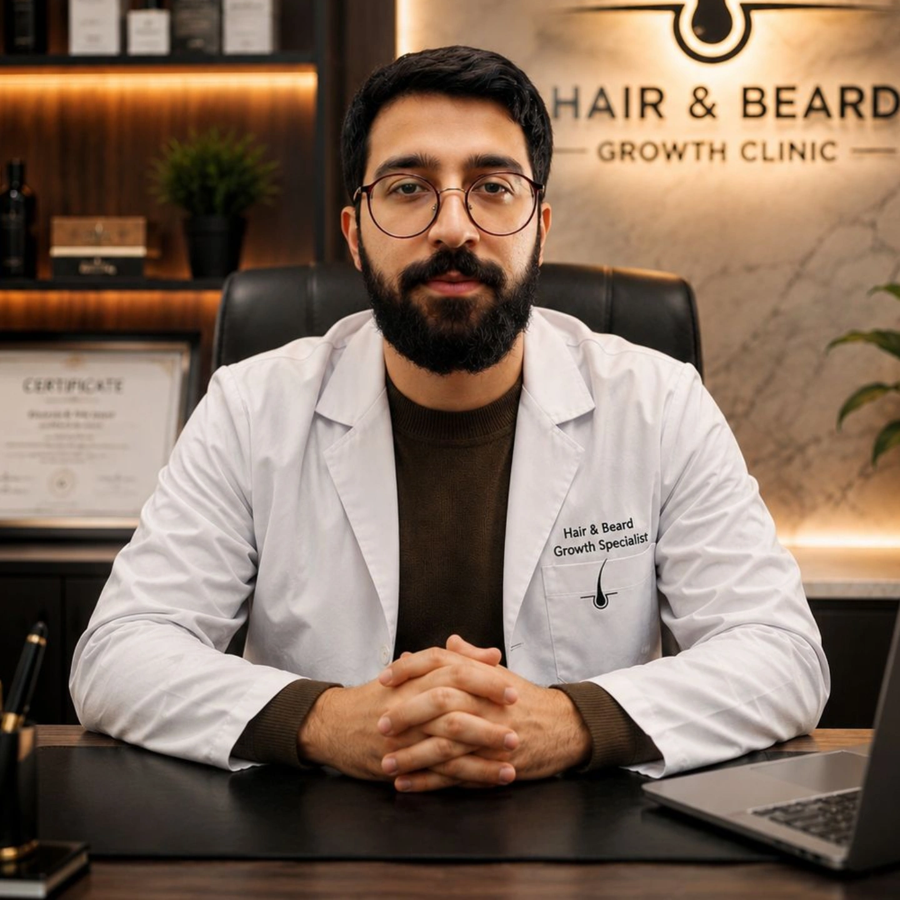

با بررسی دقیق علت ریزش مو و مشکلات پوست، برنامه درمانی اختصاصی برای هر مراجعهکننده ارائه میشود تا بهترین نتیجه در کوتاهترین زمان حاصل شود.
دریافت مشاوره مشاهده خدمات
بررسی علت ریزش مو و ارائه برنامه درمانی تخصصی برای بانوان و آقایان.
روشهای علمی برای افزایش ضخامت، استحکام و رشد مجدد موها.
راهکارهای تخصصی جهت تقویت فولیکولهای ریش و افزایش تراکم.
تزریق مواد مغذی جهت تغذیه فولیکولها و کاهش ریزش مو.
استفاده از پلاسمای غنی از پلاکت برای تحریک رشد طبیعی مو.
ارزیابی مشکلات پوستی و ارائه برنامه مراقبتی متناسب با پوست شما.
آموزش روتین صحیح مراقبت و معرفی محصولات مناسب برای حفظ سلامت پوست و مو.
بررسی کامل شرایط هر مراجعهکننده قبل از شروع درمان.
استفاده از محصولات استاندارد و باکیفیت.
درمان بر اساس علت، نه صرفاً کاهش علائم.
نسخه درمانی متناسب با شرایط هر فرد.
پیگیری روند درمان و پاسخگویی به سوالات مراجعهکنندگان.
خدمات حرفهای با هزینه منطقی و شفاف.
🎁 مشاوره اولیه کاملاً رایگان
یا
🔥 ۲۰٪ تخفیف اولین مراجعه
پس از ثبت اطلاعات، کارشناسان کلینیک رویش رضوی وضعیت پوست و موی شما را بررسی کرده و مناسبترین روش درمانی را پیشنهاد خواهند داد.
بررسی اولیه کاملاً رایگان
پاسخگویی در کوتاهترین زمان
برنامه درمانی اختصاصی
بعد از چند ماه درمان، ریزش موهایم به شکل محسوسی کمتر شد و از نتیجه بسیار راضی هستم.
مشاوره دقیق و برخورد حرفهای باعث شد با خیال راحت درمانم را شروع کنم.
برای درمان کمپشتی ریش مراجعه کردم و نتیجه بسیار بهتر از انتظارم بود.